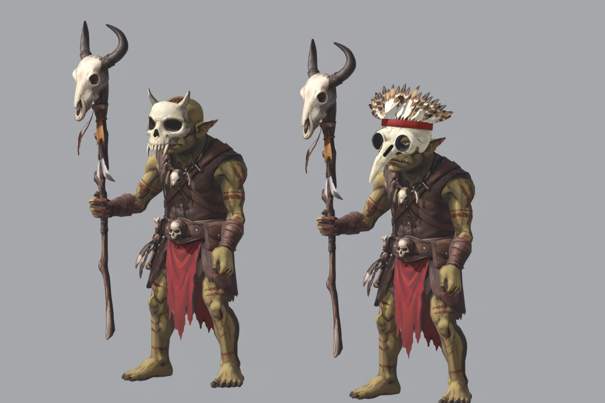
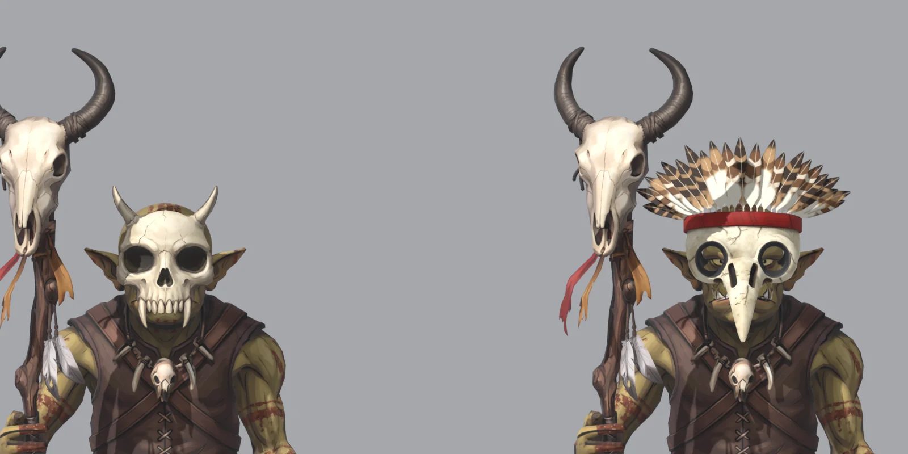
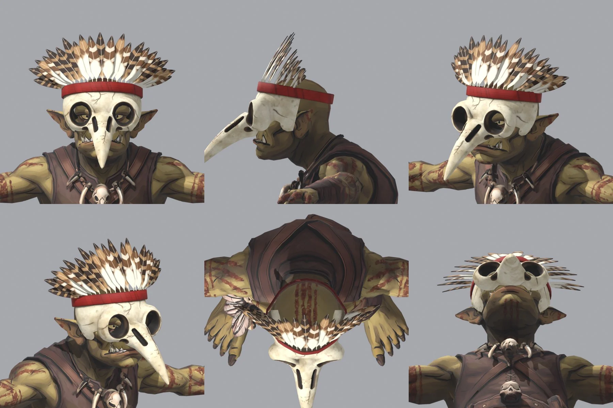
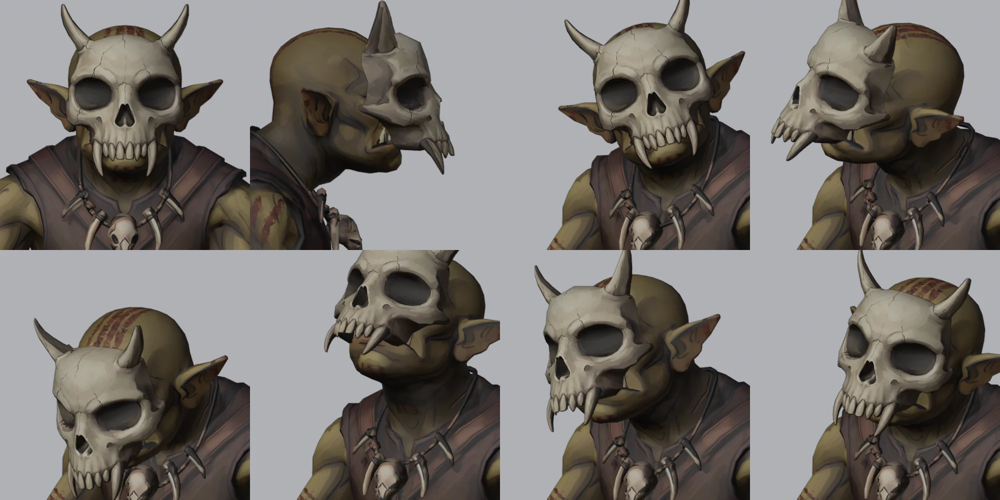
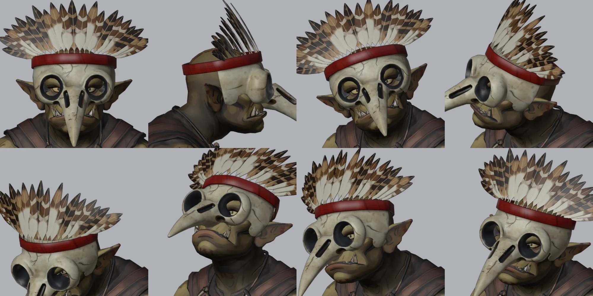

MERIDIUS / GOBLIN SHAMAN / 3D RIG / 27 OCT 2026
Goblin Shaman 3D rig
The goblin shaman, built in Tripo with his staff and mask as separate models and rigged in Blender on a Mixamo-compatible skeleton. He comes in two variants, one in each mask: the horned skull, Tripo's mask trimmed to a face plate, and the bird skull with a feather crest on a red band, built from code in Blender. Both hold the staff closed in the right fist and carry the same tribal markings in dried blood. No animation clips have been retargeted onto him yet, so the viewer below shows each shaman in his standard pose and in a head check, from the game's battle camera, in all four facings.
Pose viewer
Pick a shaman and a pose, then a facing. Switching between the two masks keeps the facing, so you can compare them. SW shows the masks best: in SE the staff's skull stands in front of his face, and NW and NE show his back. The head check turns his head 40° left and right, nods it 25° down and up and tilts it 15° each way, as the rig's mask checks do; pause and step to the frame you want to comment on. Keys: Space play / pause, ← → one frame, Shift + ← → five frames, Home and End first and last frame.
Nano Banana Pro on Higgsfield redrew the shaman as a T-pose and drew his staff and the horned skull mask on their own. The bird skull mask was drawn later, straight from the front, as the reference for building it in Blender.
Body, staff and horned mask as three models, Smart Mesh in quads, each textured at 4096 px. The body has 6,123 faces. 360 Tripo credits in all.
He stands 1.486 m tall, like the other goblins. The staff's leather grip is thinned from 5.7 to 3.6 cm, so his three-fingered fist closes round it.
The horned skull is cut behind the horns to a 0.34 m face plate and bent round his face. The beak mask is built from code: 4,575 faces, its eye sockets cut through in dark grey so his eyes show.
Tribal markings in dried blood, painted on his skin by script before the mask is fitted, so both shamans share one texture.
75 bones with Mixamo names, 52 of them deforming, at most four per vertex: fingers, forearm twist bones and skirt flaps. The staff rides in the right fist and the mask is rigid on the head.
Turned, nodded or tilted, no body triangle passes through either mask; the face stays 1.3–1.4 mm off it. Only the fist's fingers touch the staff.
The two shamans

goblin_shaman_rig.blend) and the beak mask on the right (goblin_shaman_beak_rig.blend). The staff stands beside him, leaning 3° ahead, its skull turned 16° to his right, with the arm 32° out from his side and the elbow bent 50°.
The beak mask, built in Blender

Head and mask checks


Notes
- No clips yet. The viewer shows poses, not animation. The head check is a review motion keyed on a copy of the standard pose for the render (104 frames, eased, looping); it is not saved in the rig. The goblin clips in
projects/meridius/Animationshave not been retargeted onto the shaman, and his staff will need the same per-frame arm corrections as the rabble's weapons. - Frames. Rendered in Blender's Workbench, flat-lit with an outline and cavity, from an orthographic camera 30° above the ground, at 254.5 px per metre (the rabble's scale) in a 640 × 640 frame, then packed at 0.75 scale. Every frame stays at least 27 px inside the frame, the staff's top in the north-west facing.
- Limits. The thumb lies along the staff's grip instead of folding over the index finger, as on the other goblins. Ten finger triangles cut the round grip, hidden inside the fist. The grip is at his hip height, so a fist that holds the staff upright cannot plant its foot on the ground: it stands 23 cm off it. No strap holds either mask on; the rig keeps it rigid on the head. The skirt passes through the legs a little in a stride, none in the standard pose.
- Files. In
projects/meridius/references/characters/blender/goblin_shaman/:goblin_shaman_rig.blendandgoblin_shaman_base.blend(skull mask),goblin_shaman_beak_rig.blendandgoblin_shaman_beak_base.blend(beak mask), built by the scripts in itstools/:build_goblin_shaman.py(withMASK=beakfor the beak mask),beak_mask.py,paint_beak_mask.py,paint_goblin_shaman.pyandrig_goblin_shaman.py, withrender_rig.pyfor the review renders and measurements. The viewer's frames are rendered byrender_clips.pyand packed bygoblin_rabble/tools/pack_sheets.py. The README there records the build and every check. Prompts and the mask's front view are inreferences/characters/goblin_shaman/.